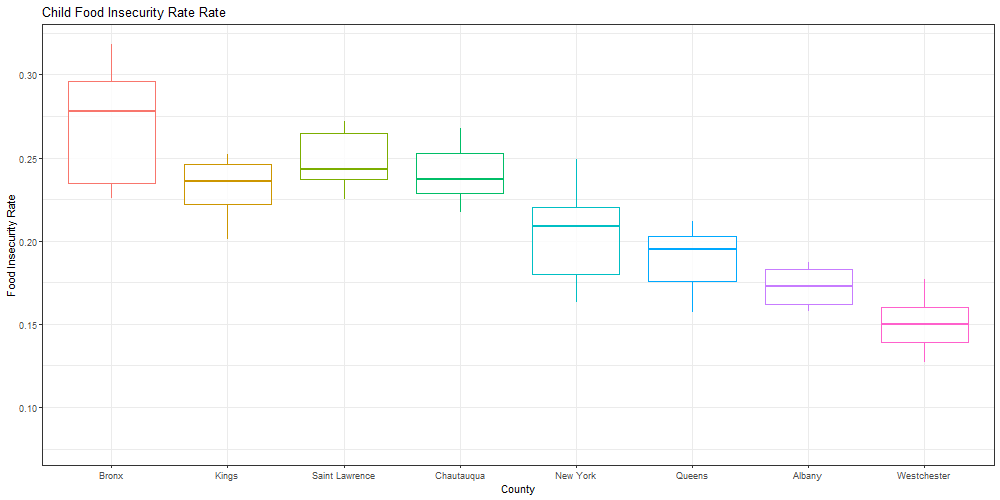
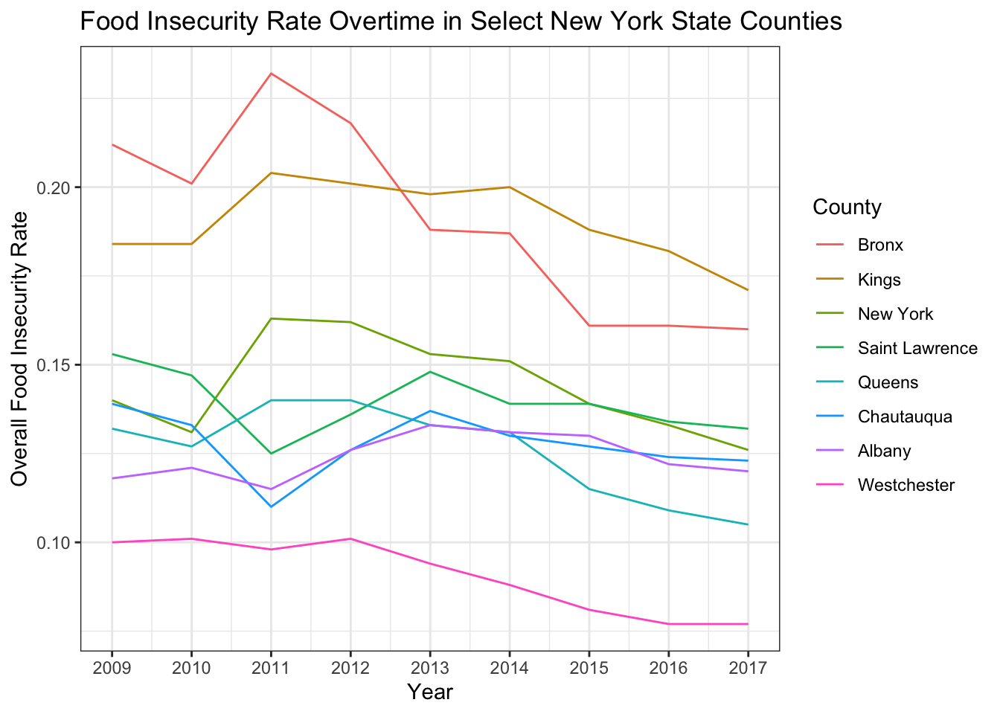

Food Insecurity Project Report
Caroline Andy, Vasili Fokaidis, Stella Li, Tessa Senders
Motivation
Food Insecurity Prevalence and Significance
Food insecurity, the state of being without reliable access to a sufficient quantity of affordable, nutritious food, is a leading health and nutrition issue in the United States. In 2017 an estimated 40 million Americans (12.5 percent) were food insecure.
Food insecurity is associated with numerous adverse health outcomes, including mental health problems, diabetes, hypertension, asthma and poorer general health. As a result of the COVID-19 pandemic, millions of Americans have lost stable employment; early estimates suggest more than 50 million people, including 17 million children, may be experiencing food insecurity in 2020.
Existing research has shown food insecurity to disproportionately impact non-White populations, as well as immigrants, those lacking health insurance, and those with lower educational attainment.
Figure 1. National food insecurity prevalence by race and ethnicity

Image from Center on Budget and Policy Priorities
As a result of the increasing prevalence of food insecurity during the COVID-19 pandemic, we are collectively interested in investigating the prevalence of food insecurity on the county-level and its association with select social determinants of health.
This is of particular importance, since research has shown the COVID-19 pandemic to be disproportionately impacting many of these same sub-populations. Moreover, a majority of food insecure individuals surveyed in Feeding America’s 2014 Hunger in America study reported having to choose between food and medical care. Increasing financial burden in 2020 due to job and/or health insurance loss may be further exacerbating this phenomenon.
Thus, identifying the specific regions and/or sub-populations at the greatest risk for food insecurity is essential to develop and enact targeted, effective intervention strategies to reduce the burden of food insecurity.
Project goals
Initially, our overarching question was, what does the food disparity across the United States look like on national, regional and county-levels? After investigating the variables in our datasets, we developed more specific research questions and goals, including:
- Which counties, states and regions are most disproportionately affected by food insecurity?
- What are the demographic breakdowns of food insecure counties?
- How has food insecurity changed overtime in NY state?
- And, can we visualize food insecurity in an accessible way to give people information on how they can help and/or access nutrition assistance resources?
Data: Source, scraping method, cleaning, etc.
We utilized Feeding America’s Map the Meal Gap data to quantify food insecurity on a county and regional level. Map the Meal Gap is an annual study conducted by Feeding America to characterize how food insecurity and food costs vary at the local level. Understanding these variations may allow communities to develop targeted strategies to reach people struggling with hunger. For this project, we used Map the Meal Gap annual study reports from years 2011 to 2019, where each report is based on US Census data from the preceding two years. Thus, the study data range from years 2009 - 2017.
Each report presents estimates of 15 food insecurity indicators generated using predictive modeling. These include variables such as overall and child food insecurity rate, and the number of food insecure people and children. Data were presented on the state, county, and congressional district-level. For this project, we used county-level data.
As these data were contained on multiple Excel files, we used the map function to import the data across files. Since column naming was not always consistent across files, the coalesce function was used to combine data from columns representing the same variables. We then generated a unique county-state field, and re-valued select county entries using stringr to be consistent with the US Healthcare.gov Geocodes dataset county naming convention (https://data.healthcare.gov/resource/geocodes-usa-with-counties.json).
In addition to the Map the Meal Gap data, we also used 2017 US Census American Community Survey (ACS) datasets (link to site), which provide county-level breakdowns of relevant social determinants of health, including county racial and ethnic makeup, percent uninsured, percent foreign born, educational attainment breakdowns, and income category breakdowns. We merged these datasets on the county variable to generate a singular tidied table containing county-level food insecurity estimates and demographic breakdowns.
Like the Map the Meal Gap data, the ACS data were contained on multiple CSV files. Thus, we used the map function to import the data across files. To merge this dataset with the Map the Meal Gap data on the county variable, we also re-valued county entries using stringr to be consistent with the above mentioned county naming convention.
In order to map these data elements onto a US county map, we also joined the zip code, latitude and longitude fields from the US Healthcare.gov Geocodes dataset onto the table. Federal Information Processing Standards (FIPS) county codes were also separately joined onto the tidied table from an educational website. (https://mdreducation.com/ >pdfs > US_FIPS_Codes)
Finally a list of food banks from the Feeding America website was scraped by running a shell of the Docker software in R. Docker was used to click the button on the website hiding the data and then the correct data was scraped using the CSS selector tool to identify the data’s CSS selectors. This data was also matched to the zip code, latitude and longitude data elements in order to map the food bank locations.
Exploratory analysis
Visualizations, summaries, and exploratory statistical analyses. Justify the steps you took, and show any major changes to your ideas. Additional analysis: If you undertake formal statistical analyses, describe these in detail
Animated Scatterplots
To create the animated scatterplots, we joined the tidy American Community Survey data with the tidy Feeding America data to develop datasets containing specific variables of interest to compare against food insecurity rates. These variables included race, education level of attainment, insurance status, and income bracket within each county in the U.S. To compare these variables against the food insecurity rate, we converted the counts to percents.
Using gganimate we created animated scatterplots that transition through the levels of each demographic variable with percent level on the y-axis, and food insecurity measure on the x-axis.
United States Food Insecurity ShinyApp Maps
To view geographic trends in food insecurity indicators across the United States, we also generated an interactive county map of the US which allows users to view and compare food insecurity measures across all counties simultaneously. Users may select the food insecurity metric of interest, as well as the year and particular states, if desired.
We also created an interactive map which contains the locations of food banks around the United States to encourage utilization and/or donation.
Box Plots
To supplement the above exploratory analyses, we became interested in comparing and characterizing the prevalence of food insecurity within i) select New York state counties, ii) US states, and iii) US regions. We generated animated boxplots which transition through four food insecurity indicators: overall food insecurity rate, the total number of food insecure individuals, child food insecurity rate and the number of food insecure children.
Regions were defined according to the United States Census definitions of US regions. (link to site)
Discussion
What were your findings? Are they what you expect? What insights into the data can you make?
There exists substantial regional variation in food insecurity and child food insecurity rates, and in the number of food insecure children and individuals across the United States. North Dakota, northern Virginia and Maryland contain counties with some of the lowest rates of food insecurity (less than 10 percent). Alabama and Mississippi, on the other hand, contain counties in which more than 35 percent of total people are food insecure.
Preliminary analysis of the box plot data shows substantial variation in food insecurity between several selected counties within New York state. We selected Kings, Bronx, New York, Queens, Westchester, Albany, Chautauqua and Saint Lawrence counties to compare food insecurity across both rural and urban communities.
On a state level, Mississippi was shown to have the highest rate of overall food insecurity, while North Dakota had the lowest. Regionally, the South had the highest rates of overall and child food insecurity, and the Northeast had the lowest. Due to population size differences, the Northeast, however, had the greatest number of total food insecure individuals and food insecure children.
The national food insecurity rate has been slowly decreasing from 2009 to 2017 from about 16.2% to about 13.2%. The number of food insecure children in the entire USA has also been slowly decreasing from 2009 to 2017 from over 18 million (18,281,540) to less than 14 million (13,268,380).
INSERT SUMMARY TABLES HERE : map_the_meal_gap_df %>% group_by(year) %>% summarize(sum(number_food_insecure_children))
map_the_meal_gap_df %>% group_by(year) %>% summarize(sum(number_food_insecure_children, na.rm = TRUE))
Box plots: Make sure titles are standardized (caps vs lowercase) Axis labels
General: Remove names/dates Make neat/label code Write home page abstract Add on home page contributor list at bottom (alphabetical order by last name)
Food insecurity in NY state counties
Food insecurity rates by county
library(tidyverse)
library(ggplot2)
library(gganimate)
fi_rates =
read_csv("map_the_meal_gap_df.csv") %>%
filter(county_state %in% c("saint lawrence_NY", "albany_NY", "chautauqua_NY",
"new york_NY", "queens_NY", "kings_NY", "bronx_NY",
"westchester_NY")) %>%
select(county, state, year, fi_rate, child_fi_rate) %>%
pivot_longer(
fi_rate:child_fi_rate,
names_to = "rate",
values_to = "measure"
) %>%
mutate(
rate = str_replace(rate, "fi_rate", "Overall Food Insecurity Rate"),
rate = str_replace(rate, "child_Overall Food Insecurity", "Child Food Insecurity Rate"),
county = str_replace(county, "albany", "Albany"),
county = str_replace(county, "bronx", "Bronx"),
county = str_replace(county, "chautauqua", "Chautauqua"),
county = str_replace(county, "kings", "Kings"),
county = str_replace(county, "saint lawrence", "Saint Lawrence"),
county = str_replace(county, "new york", "New York"),
county = str_replace(county, "westchester", "Westchester"),
county = str_replace(county, "queens", "Queens"),
county = factor(county, levels = c("Bronx", "Kings", "Saint Lawrence", "Chautauqua",
"New York", "Queens", "Albany", "Westchester"))
) %>%
ggplot(aes(x = county, y = measure, color = county)) +
geom_boxplot(show.legend = FALSE, alpha = 0.8) +
labs(
title = '{closest_state}',
x = "County",
y = "Food Insecurity Rate"
) +
theme_bw() +
transition_states(rate, transition_length = 1, state_length = 3, wrap = TRUE)
animate(fi_rates, fps = 10, height = 500, width = 1000)
Number of food insecure people by county
fi_numbers =
read_csv("map_the_meal_gap_df.csv") %>%
filter(county_state %in% c("saint lawrence_NY", "albany_NY", "chautauqua_NY",
"new york_NY", "queens_NY", "kings_NY", "bronx_NY",
"westchester_NY")) %>%
select(county, state, year, number_food_insecure_individuals, number_food_insecure_children) %>%
pivot_longer(
number_food_insecure_individuals:number_food_insecure_children,
names_to = "indicator",
values_to = "number"
) %>%
mutate(
indicator = str_replace(indicator, "number_food_insecure_individuals", "Number Food Insecure Individuals"),
indicator = str_replace(indicator, "number_food_insecure_children", "Number Food Insecure Children"),
county = str_replace(county, "albany", "Albany"),
county = str_replace(county, "bronx", "Bronx"),
county = str_replace(county, "chautauqua", "Chautauqua"),
county = str_replace(county, "kings", "Kings"),
county = str_replace(county, "saint lawrence", "Saint Lawrence"),
county = str_replace(county, "new york", "New York"),
county = str_replace(county, "westchester", "Westchester"),
county = str_replace(county, "queens", "Queens"),
county = factor(county, levels = c("Kings", "Bronx", "Queens", "New York",
"Westchester", "Albany", "Chautauqua", "Saint Lawrence"))
) %>%
ggplot(aes(x = county, y = number, color = county)) +
geom_boxplot(show.legend = FALSE, alpha = 0.8) +
labs(
title = '{closest_state}',
x = "County",
y = "Number of Food Insecure Individuals/Children"
) +
theme_bw() +
transition_states(indicator, transition_length = 1, state_length = 3, wrap = TRUE)
animate(fi_numbers, fps = 10, height = 500, width = 1000)
Food Insecurity in US Regions
Food insecurity rates by US region
state = c("AL", "AK", "AZ", "AR", "CA", "CO", "CT", "DE", "FL", "GA", "HI", "ID", "IL",
"IN", "IA", "KS", "KY", "LA", "ME", "MD", "MA", "MI", "MN", "MS", "MO", "MT",
"NE", "NV", "NH", "NJ", "NM", "NY", "NC", "ND", "OH", "OK", "OR", "PA", "RI",
"SC", "SD", "TN", "TX", "UT", "VT", "VA", "WA", "WV", "WI", "WY")
region = c("S", "W", "W", "S", "W", "W", "NE", "S", "S", "S", "W", "W", "MW", "MW",
"MW", "MW", "S", "S", "NE", "S", "NE", "MW", "MW", "S", "MW", "W", "MW",
"W", "NE", "NE", "W", "NE", "S", "MW", "MW", "S", "W", "NE", "NE", "S",
"MW", "S", "S", "W", "NE", "S", "W", "S", "MW", "W")
x_walk = tibble(state, region)
food = read_csv("map_the_meal_gap_df.csv")
fi_rates_region =
merge(food, x_walk, by = "state") %>%
mutate(region = str_replace(region, "MW", "Midwest"),
region = str_replace(region, "W", "West"),
region = str_replace(region, "NE", "Northeast"),
region = str_replace(region, "S", "South"),
region = factor(region, levels = c("South", "West", "Midwest", "Northeast"))
) %>%
group_by(region, year) %>%
summarize(mean_fi = mean(fi_rate), mean_child_fi = mean(child_fi_rate)) %>%
pivot_longer(
mean_fi:mean_child_fi,
names_to = "mean_rate",
values_to = "measure"
) %>%
mutate(
mean_rate = str_replace(mean_rate, "mean_fi", "Mean Food Insecurity Rate"),
mean_rate = str_replace(mean_rate, "mean_child_fi", "Mean Child Food Insecurity Rate")) %>%
ggplot(aes(x = region, y = measure, color = region)) +
geom_boxplot(show.legend = FALSE, alpha = 0.8) +
labs(
title = '{closest_state}',
x = "Region",
y = "Food Insecurity Measure"
) +
theme_bw() +
transition_states(mean_rate, transition_length = 1, state_length = 3, wrap = TRUE)
animate(fi_rates_region, fps = 10, height = 500, width = 1000)
Number of food insecure people by region
num_fi_region =
merge(food, x_walk, by = "state") %>%
mutate(region = str_replace(region, "MW", "Midwest"),
region = str_replace(region, "W", "West"),
region = str_replace(region, "NE", "Northeast"),
region = str_replace(region, "S", "South"),
region = factor(region, levels = c("South", "West", "Midwest", "Northeast"))
) %>%
group_by(region, year) %>%
summarize(tot_num_fi = sum(number_food_insecure_individuals), tot_num_child_fi = sum(number_food_insecure_children)) %>%
pivot_longer(
tot_num_fi:tot_num_child_fi,
names_to = "tot_num",
values_to = "measure"
) %>%
mutate(
tot_num = str_replace(tot_num, "tot_num_fi", "Total Number of Total Food Insecure Individuals"),
tot_num = str_replace(tot_num, "tot_num_child_fi", "Total Number of Food Insecure Children")) %>%
ggplot(aes(x = region, y = measure, color = region)) +
geom_boxplot(show.legend = FALSE, alpha = 0.8) +
labs(
title = '{closest_state}',
x = "Region",
y = "Total Number of Food Insecure People"
) +
theme_bw() +
transition_states(tot_num, transition_length = 1, state_length = 3, wrap = TRUE)
animate(num_fi_region, fps = 10, height = 500, width = 1000)
Line plot of NY state counties overtime
